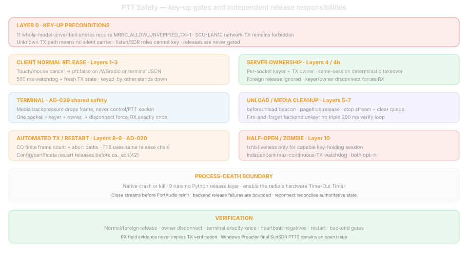

15. PTT Safety Architecture (ART 0535)
Principle: Release is more safety-critical than keying. A lost PTT release command can leave a radio transmitting indefinitely — causing harmful interference, overheating the radio, and violating spectrum regulations. Every layer must have an independent path to force RX.
15.1 Safety Model — Defense in Depth
The MRRC Modern PTT safety architecture provides multiple independent release layers against stuck-TX scenarios for every supported backend, preceded by configuration/backend preconditions (Layer 0) that decide whether a path may key at all. The layers below are numbered by responsibility, not by a claim that any one count is sufficient.
| Layer | Location | Mechanism | Failure Mode Caught |
|---|---|---|---|
| 0 | Server (backend, precondition) | set_ptt(True)/set_tune(True) enforce AD-019 and backend-specific media gates. Whole-model unverified radios require MRRC_ALLOW_UNVERIFIED_TX=1; SCU-LAN10 network TX is still refused even with that opt-in because its TX audio is unknown. Releases are never gated |
Keying an unmeasured model or producing a silent network carrier |
| 1 | Browser UX | Touch-and-hold: release on mouseup/touchend/mouseleave/touchcancel |
User intentionally releasing PTT |
| 2 | Client → Server | sendCommand('ptt', false) over /WSradio or unchanged terminal control JSON |
Normal network path |
| 3 | Browser | PTT Watchdog: 500 ms interval checks authoritative tx_status; up to 3 retries; foreign-keyer push stands it down |
Release command/state broadcast lost without unkeying another client |
| 4 | Server | Per-socket dead-man and ownership: keyer/uplink-owner disconnect forces RX even if other clients remain. Same-session TX replacement is deterministic and different sessions cannot steal. /WSterminal keyer and owner are the same socket, so its single cleanup forces RX exactly once, then removes all four logical registrations |
Browser/terminal crash, tab close, network loss, audio socket drop and multi-client ownership |
| 4b | Server | _ptt_key_ws accepts only the keyer’s own release while keyed; foreign ptt:false gets authoritative tx_status + ptt_keyed_by_other |
Idle tab watchdog unkeying the live operator |
| 5 | Browser | beforeunload → navigator.sendBeacon() release attempt |
Tab/browser close during TX |
| 6 | Browser | pagehide → sendCommand('ptt', false) |
Mobile app switch/backgrounding |
| 7 | Server + Browser | Stop TX audio, clear queue, send s: where applicable |
Audio continuing after release |
| 8 | Server | One-touch CQ and other automated TX have finite ends and abort on initiator/last-client disconnect, external release or shutdown | No operator finger on PTT |
| 9 | Server (restart path) | _schedule_restart() releases PTT with a bounded call before os._exit(RESTART_EXIT_CODE) and tolerates degraded/missing controller attributes |
Config/certificate restart while keyed |
| 10 | Server (hub/timeout extension) | Opt-in TX heartbeat liveness and independent maximum-continuous-TX watchdog release only the eligible owner/session | Half-open NAT/Wi-Fi connection or connected-but-hung client |
The release layers are not the whole story — the process must survive to run them (2026-10-16). Every layer above assumes a live server process. A field report (按发射 → 电台一直发射 → MODERN SERVER 进程消失, Windows 11 + FT-710) showed how the two interact: ptt:true keys the radio before the TX audio stream is opened, and audio_handler.start_tx()’s USB-re-enumeration recovery (_reinit_pyaudio()) called Pa_Terminate() while the RX capture stream was still being read on the event-loop thread — a use-after-free, i.e. a native access violation that kills the process with no Python traceback, so none of Layers 2–9 ever runs and the radio stays keyed. The fix is to close both streams under a lifecycle lock (_stream_lock()) before terminating PortAudio, to take that lock non-blockingly in read_rx_chunk(), and to treat a raised start_tx() as a release trigger in the ptt:true handler. The operational lesson stands regardless: when the process itself can die, the radio’s own Time-Out Timer (TOT) is the only layer that survives it.
Removed layer — Triple TX0 Verify (removed in V1.2, 2026-07-08): earlier releases queried TX; three times at 200ms intervals after every release and re-sent TX0; on non-zero. This added ~600ms to every release, and field observation showed the radio obeys TX0; on the first write (fire-and-forget). Stuck-keyup detection is now covered by the server-side TX-status poll (500ms) feeding the browser PTT watchdog (Layer 3).

15.2 Layer Details
Layer 0 (AD-019 plus backend-specific gates): key-up eligibility. The active backend decides key-up on every attempt. The 11 whole-model-unverified registry entries (experimental Icom/Yaesu, G7250, SunSDR2 DX and FlexRadio) require MRRC_ALLOW_UNVERIFIED_TX=1; the settings page can apply that opt-in without a restart, using exact confirmation. This is not a blanket capability override: SCU-LAN10 network mode still refuses PTT/TUNE because its 668-byte TX audio frame is unknown, and a backend that cannot prove a supported mode/path refuses rather than emit a silent carrier. Partial real-radio RX evidence (including FLEX-6600 and FTDX101MP) does not clear the whole-model flag. PTT releases are never gated, so every layer below can always unkey.
Layer 1: Touch-and-Hold UX
PTT only transmits while the user is actively touching the PTT button:
pttBtn.addEventListener('mousedown', handlePTTStart);
pttBtn.addEventListener('touchstart', function(e) { e.preventDefault(); handlePTTStart(); });
pttBtn.addEventListener('mouseup', handlePTTEnd);
pttBtn.addEventListener('touchend', function(e) { e.preventDefault(); handlePTTEnd(); });
pttBtn.addEventListener('mouseleave', handlePTTEnd);
pttBtn.addEventListener('touchcancel', handlePTTEnd);Layer 2: Normal WebSocket Command
function handlePTTEnd() {
sendCommand('ptt', false);
// ...
}Server receives {"type":"set","field":"ptt","value":false} → sends the backend-specific PTT unkey command (FT-710 CAT TX0;, IC-7300/MK2 CI-V 0x1C 0x00 unkey) fire-and-forget (see removal note in §15.1).
Layer 3: PTT Watchdog (Browser)
// ptt_manager.js
pttVerifyTimer = setInterval(function() {
if (!pttActive && !tuneActive) {
if (radioState.tx_status !== 0) {
retries++;
sendCommand('ptt', false);
if (retries >= 3) {
// Force locally
radioState.tx_status = 0;
radioState.is_transmitting = false;
renderPTTState();
renderStatusBar();
stopPTTWatchdog();
}
} else {
stopPTTWatchdog();
}
}
}, 500);The watchdog’s input is the server-side TX-status poll (500ms), which keeps radioState.tx_status fresh even if the release command’s state update was lost. The same ownership/dead-man logic applies to the IC-7300/MK2 backend, where PTT key/unkey is sent as CI-V 0x1C 0x00 frames.
Cross-client false positive (fixed 2026-09-25, SDD I6 PTT half): the watchdog cannot tell “my release did not land” from “another client just keyed” — with two tabs open, the idle tab’s watchdog re-sent ptt:false on the other tab’s key-up and unkeyed the live transmission (field log: 75 TX sessions in 5 minutes, 16 with zero mic frames, three releases 30 ms apart). Two layers now stop this: the server ignores a release from any socket that is not the current keyer (_ptt_key_ws, Layer 4b) and pushes the authoritative tx_status back with ptt_keyed_by_other: true; on that flag the browser calls PTTManager.cancelWatchdog() and stands down instead of retrying.
Layer 4: Dead-Man Switch (Server)
# In /WSradio disconnect handler:
if not ctrl_clients and radio.is_transmitting and backend and backend.connected:
logger.warning("Last client disconnected during TX! Forcing RX.")
await backend.set_ptt(False)
radio.update(tx_status=0)
if audio:
audio.stop_tx()Uplink ownership is per socket, but a session token is not (fixed 2026-10-05, SDD I6 uplink half): the token is a 30-day cookie, so ONE browser session can hold several /WSaudioTX sockets at once — a page reload leaves its predecessor half-open for tens of seconds, and two tabs of one login share the token outright. _claim_tx_owner_for_token() resolved that token by taking the first match scanned out of audio_tx_clients, a set, so the key-up claim was decided by iteration order. Field log 2026-10-05 on a hub instance: the claim landed on the dead predecessor, TX audio ownership → PTT client was logged as usual, and the reloaded page’s every mic frame was then dropped as non-owner — frames=0 non_owner_drops=236, peak=0% (a keyed carrier with no modulation) for 58 s, until the stale socket was reaped and _promote_tx_owner() handed the uplink to the survivor (frames=78 written=72 peak=99%). Two layers now:
- Deterministic claim —
_register_tx_socket()records each socket’s connect order and the key-up claim takes the last-connected socket of that session, which is what “a same-session replacement audio socket supersedes a half-open page-reload socket” always meant; a first-match scan only ever satisfied it by luck. - Streaming takeover —
_same_session_uplink_takeover()hands the uplink to a non-owner socket whose token equals the owner’s, on the first frame it actually streams. This covers the case a connect-time rule cannot: two same-session sockets that are both live, where the operator happens to work in the one that connected first. Self-heals within one 20 ms frame instead of muting the whole transmission.
A different session still cannot steal an active uplink — neither by connecting (_assign_tx_owner_on_connect) nor by streaming at it — because interleaving two microphones into one playback queue is exactly what the single-owner guard exists to prevent. Ownership moving away from a socket also keeps the dead-man switch correct: the finally block only forces RX when the socket that disconnects is the owner (TXUplinkOwnershipTests).
Single-socket terminal (AD-039): an operator /WSterminal is registered as control, RX and TX at once, so its media ingress uses _feed_tx_uplink_frame() and exactly the same owner rules. A media send timeout drops only that audio/spectrum frame; it must not close the socket that carries PTT release. On disconnect, _terminal_disconnect() first determines was_keyer and was_owner, clears both authorities and all logical registrations, and executes one shared force-RX branch. This avoids the otherwise possible duplicate unkey/warning from the keyer and owner rules firing on the same object. A plain RX/listen terminal disconnect never touches PTT.
ATR1000 tune assist (server-side TX2 keying): the optional ATR tune assist (_atr_tune_assist(), §9.8) keys a TX2 carrier server-side for up to 45 s (ATR_TUNE deadline). Safety: the carrier drop is guaranteed by a finally block on every exit path (skip/success/rollback/error); the Layer 4 last-client-disconnect dead-man switch still applies while the carrier is up; an SWR≤1.6 gate skips tuning entirely; relays roll back when SWR does not improve. All ATR I/O runs in its own asyncio task — never on the audio path.
Layer 4b: Control-Plane PTT Arbitration (Server)
The TX-audio uplink has had a single owner since V2.4x; the control plane did not — any full-control client could send ptt:false at any time (last-writer-wins, SDD I6). Since 2026-09-25 the socket that sends ptt:true is recorded as _ptt_key_ws, and while it holds the key:
# /WSradio "set ptt" handler:
if not _ptt_release_allowed(ws): # ws is not the keyer
# ignore the release, push the authoritative state back:
await ws.send_text(json.dumps({
"type": "stateUpdate",
"fields": {"tx_status": radio.tx_status},
"dirty": ["tx_status"],
"ptt_keyed_by_other": True, # browser watchdog stands down
}))
return- A key-up from any client is still honored (takeover by re-keying), and the keyer’s own release always passes — the stuck-keyup retry path (Layer 3) is untouched.
_ptt_key_wsis cleared on every server-initiated unkey: normal release, audio-open-failure unkey,MRRC_PTT_MAX_TX_SECONDSwatchdog, /WSaudioTX owner-disconnect force-RX.- Zombie keyer: when the keying control socket disconnects mid-TX the server forces RX immediately — even with other clients still connected (they are not the keyer, and their releases are exactly what the arbitration ignores). Mirrors the /WSaudioTX owner rule.
- Trade-off: while a keyer is connected but unresponsive (browser frozen, socket alive), other clients cannot unkey it; the coverage is the keyer-disconnect rule, the Layer 4 dead-man, and the opt-in
MRRC_PTT_MAX_TX_SECONDSwatchdog. - Tests:
PTTControlArbitrationTests(tests/test_server_ws_protocol.py).
ATR1000 auto full tune (no self-keying): the high-SWR guard (atr1000_client.py, §9.8 behaviour 4) never keys the radio — it only acts while the operator is already transmitting (measured power ≥5 W) and emits nothing but an ATR-1000 tune frame; atr1000_client.py holds no CAT/PTT reference at all (a source-level test pins this). The manual assist’s TX2 carrier path above is unchanged and remains the only ATR-initiated keying, with its finally drop rule.
Layer 5: Beforeunload Beacon
window.addEventListener('beforeunload', function() {
if (pttActive || tuneActive) {
if (navigator.sendBeacon) {
const blob = new Blob([
JSON.stringify({type:'set', field:'ptt', value:false})
], {type: 'application/json'});
navigator.sendBeacon('/WSradio', blob);
}
}
});Layer 6: Pagehide Handler
window.addEventListener('pagehide', function() {
if (pttActive || tuneActive) {
sendCommand('ptt', false);
}
});Layer 7: TX Audio Stream Stop
Server-side on PTT release:
if audio:
audio.stop_tx()Browser-side on PTT release:
function stopTXAudio() {
txAudioRunning = false;
// ...
if (wsAudioTX && wsAudioTX.readyState === WebSocket.OPEN) {
wsAudioTX.send('s:'); // Flush server TX queue
}
}Layer 8: Server-Side CQ Call (AD-020)
The CQ key transmits without a human holding PTT, so it is the one path where “the operator lets go” cannot be the safety net. Instead the player is the safety net:
- The call is a single finite asset (<= 30 s guard) played once; the player knows the frame count, so
completeis reached by arithmetic, not by a timer. - While it runs, a manual key-up (PTT), a second CQ start, and TUNE are all refused — one carrier, one source.
- Any external release of the carrier (
MRRC_PTT_MAX_TX_SECONDSwatchdog, TUNE, another client, dead-man switch) is observed throughradio.is_transmittingand ends the call asaborted/unkeyed. - The initiator’s disconnect aborts immediately (
reason:"client_gone"), never leaving a bystander’s carrier on the air. cq:falsecuts the tail (no graceful drain) because the operator asked to stop now; a natural end drains gracefully so the last syllable is not chopped.
15.3 Safety Flow Diagram
Normal Release Path:
PTT Button Release (any trigger)
→ handlePTTEnd()
→ sendCommand('ptt', false) [Layers 1+2]
→ stopTXAudio() + wsAudioTX.send('s:') [Layer 7]
→ Server: backend-specific PTT unkey command (fire-and-forget)
→ Server: TX-status poll (500ms) tracks RX
→ PTT Watchdog starts [Layer 3]
Emergency Paths:
Browser crash / tab close:
→ beforeunload → sendBeacon PTT=false; [Layer 5]
→ pagehide → sendCommand PTT=false; [Layer 6]
→ WS disconnect → server dead-man switch [Layer 4]
→ Server stops TX audio [Layer 7]
Network loss during TX:
→ WS disconnect → server dead-man switch [Layer 4]
→ Server stops TX audio [Layer 7]
→ Radio returns to RX (protocol timeout)15.4 Testing the Safety Layers
| Test | Expected Behavior | Layers Tested |
|---|---|---|
| Normal PTT press/release | TX → RX without a post-release verification delay | 1, 2 |
Foreign client sends ptt:false |
Live keyer stays keyed; sender receives authoritative keyed-by-other state | 4b |
| Keyer or TX owner disconnects | Force RX even when other clients remain | 4 |
| Force-close browser during TX | Release beacon/disconnect paths return to RX | 4, 5, 6 |
| Network packet loss during release | Browser watchdog re-sends using fresh TX-status state | 3 |
| Terminal media backpressure | Drop media, retain control/PTT socket | 4, AD-039 |
| Terminal keyer/owner disconnect | Clean every registry and force RX exactly once | 4, AD-039 |
| Half-open heartbeat-capable session | Only the key-holding session times out and releases | 10 |
| Non-heartbeat/legacy client | Never gated merely for lacking txhb |
10 |
| Restart request during TX | Release completes before process replacement | 9 |
| Pull USB/network cable during TX | Software cannot guarantee delivery while the link is gone; reconnect reconciles state and hardware TOT is required for process/link catastrophe | Hardware boundary |
Server kill -9 during TX |
No Python layer runs; radio hardware TOT is the only surviving mitigation | Hardware boundary |
15.5 Safety Design Principles
- Release is more important than keying. Every release path works even if key-up/media negotiation is broken.
- No claimed single count guarantees safety. Layers address different faults and process death remains a hardware-TOT boundary.
- Fail safe, not fail dangerous. If a backend cannot prove its key-up/media path, refuse key-up; if releasing, do not wait for repeated proof.
- Server owns arbitration. Browser state alone cannot decide whose carrier may be released.
- Read state without blocking release. Poll/status/watchdog provide subsequent evidence; the V1.2 fire-and-forget release remains authoritative.
- Media congestion is not a reason to kill control. This is explicit for AD-039’s multiplexed terminal socket.
- Hardware evidence is scoped. RX success does not lift a model’s TX gate and the global opt-in does not override an unknown TX protocol.
15.6 Hub-Mode Liveness Extension (implemented, opt-in)
V2.62 identified the missing failure mode; V2.63 implemented it. Layer 4 requires an actual WebSocket disconnect, while dropped NAT entries, Wi-Fi changes and silently discarded packets can leave a half-open socket alive. The original MRRC_PTT_MAX_TX_SECONDS fallback also shipped disabled. Hub mode therefore uses two independent controls, not a cloud-dependent release:
| Failure | Local coverage |
|---|---|
| Browser/process close or TCP RST | Layer 4 disconnect path |
| Half-open connection during TX | MRRC_REMOTE_SESSION_TX_HEARTBEAT_S for sessions that actually send txhb |
| Connected-but-hung/zombie transmission | MRRC_PTT_MAX_TX_SECONDS, independently optional |
| Server process/native crash | No software path; enable the radio’s hardware Time-Out Timer |
MRRC_REMOTE_SESSION_TX_HEARTBEAT_S defaults to 0 (off). The server _tx_liveness_watchdog() ticks at 0.25 s; heartbeat-capable browsers send {"type":"txhb"} every 500 ms during PTT/TUNE. Detection latency is bounded by threshold + one tick. Three deliberate negative cases remain: a client that never declares txhb is not gated; a stale listener cannot release another session’s carrier; and a just-keyed session with no first heartbeat yet is not immediately treated as stale. Release is one fire-and-forget set_ptt(False) with state/media cleanup, never a verify loop. Terminal control uses the same txhb message and keyer state.
MRRC_PTT_MAX_TX_SECONDS is a maximum-duration policy, not a liveness protocol. Hub deployments should set both deliberately and validate the mrrc_hub/SDD/15-ptt-safety-hub-mode.md injection matrix, including single-packet loss and foreign-listener negative cases. The historical proposal values (for example a fixed 1.0 s heartbeat threshold) are not current defaults; config.py and the running instance are authoritative.